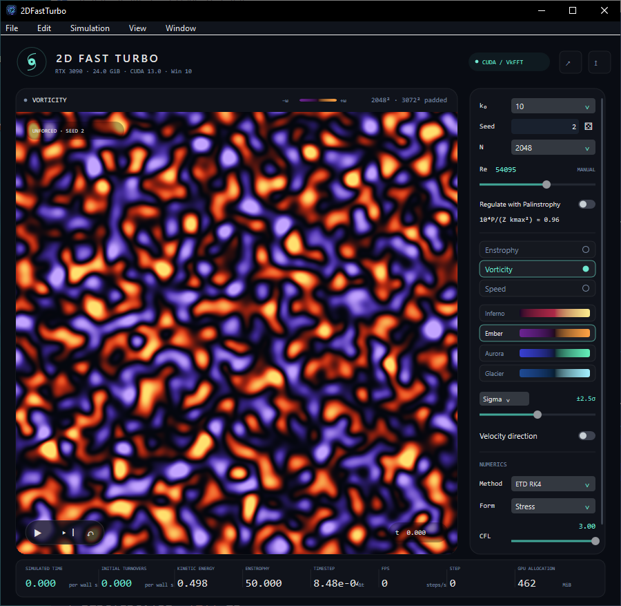
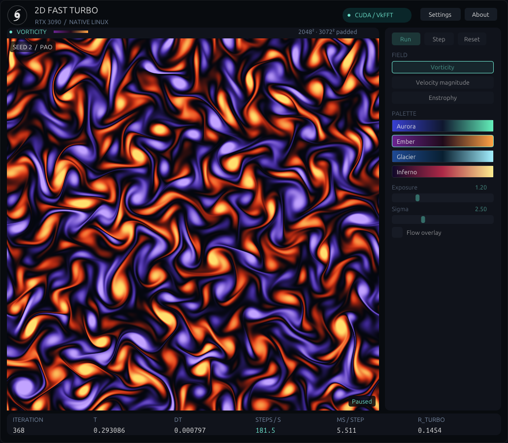
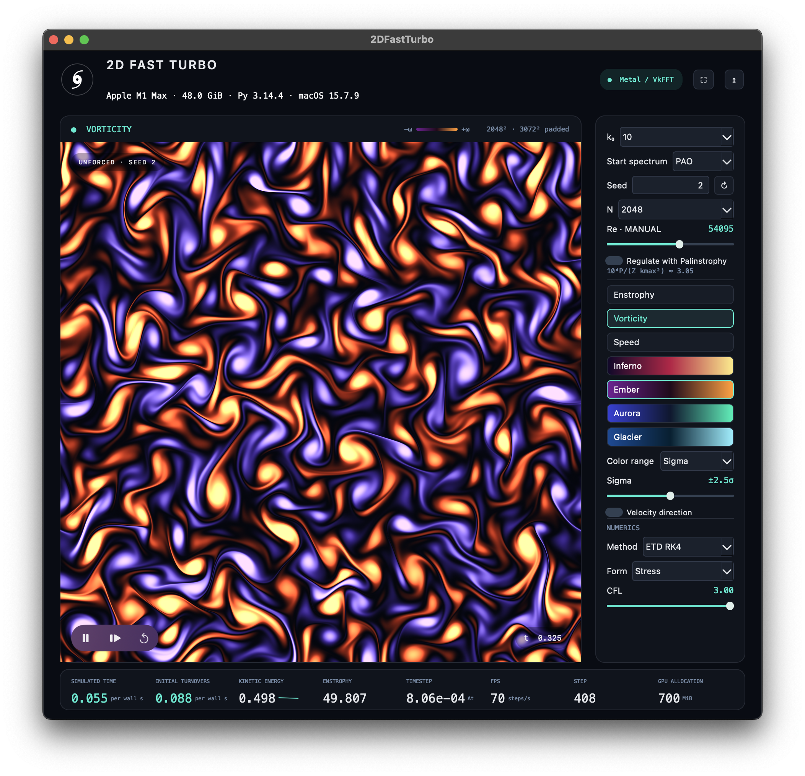

2D FAST TURBO
The final Linux layout preserves the complete square field, places compact controls on the right, and uses the Windows hurricane mark, dark panels, mint accents, palette previews and a bottom metric strip. The default Linux client is 1032×900, with a 756×756 domain. The benchmark capture has its controls temporarily disabled.
Native Windows reference
Native Linux — final square-domain layout
User-supplied GUI.png reference

Validation report · 1280×720 · 1920×1080 · 3840×2160 at 200%
The remote desktop is 1440×1024. Larger acceptance captures use actual GPU-backed X11 window buffers outside the visible desktop, bypassing window-manager size constraints. They are not physical 4K-monitor tests.